A Pedometer in the Real World
by Dessy Daskalov
Dessy is an engineer by trade, an entrepreneur by passion, and a developer at heart. She’s currently the CTO and co-founder of Nudge Rewards When she’s not busy building product with her team, she can be found teaching others to code, attending or hosting a Toronto tech event, and online at dessydaskalov.com and \@dess_e.
A Perfect World
Many software engineers reflecting on their training will remember having the pleasure of living in a very perfect world. We were taught to solve well-defined problems in idealized domains.
Then we were thrown into the real world, with all of its complexities and challenges. It’s messy, which makes it all the more exciting. When you can solve a real-life problem, with all of its quirks, you can build software that really helps people.
In this chapter, we’ll examine a problem that looks straightforward on the surface, and gets tangled very quickly when the real world, and real people, are thrown into the mix.
We’ll work together to build a basic pedometer. We’ll start by discussing the theory behind a pedometer and creating a step counting solution outside of code. Then, we’ll implement our solution in code. Finally, we’ll add a web layer to our code so that we have a friendly interface for a user to work with.
Let’s roll up our sleeves, and prepare to untangle a real-world problem.
Pedometer Theory
The rise of the mobile device brought with it a trend to collect more and more data on our daily lives. One type of data many people collect is the number of steps they’ve taken over a period of time. This data can be used for health tracking, training for sporting events, or, for those of us obsessed with collecting and analyzing data, just for kicks. Steps can be counted using a pedometer, which often uses data from a hardware accelerometer as input.
What’s an Accelerometer?
An accelerometer is a piece of hardware that measures acceleration in the $x$, $y$, and $z$ directions. Many people carry an accelerometer with them wherever they go, as it’s built into almost all smartphones currently on the market. The $x$, $y$, and $z$ directions are relative to the phone.
An accelerometer returns a signal in 3-dimensional space. A signal is a set of data points recorded over time. Each component of the signal is a time series representing acceleration in one of the $x$, $y$, or $z$ directions. Each point in a time series is the acceleration in that direction at a specific point in time. Acceleration is measured in units of g-force, or g. One g is equal to 9.8 $m/s^2$, the average acceleration due to gravity on Earth.
Figure: Example acceleration signal shows an example signal from an accelerometer with the three time series.
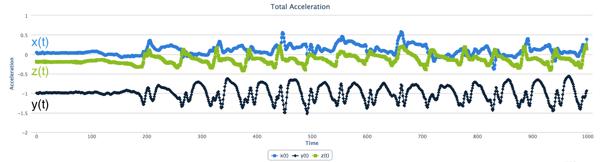
The sampling rate of the accelerometer, which can often be calibrated, determines the number of measurements per second. For instance, an accelerometer with a sampling rate of 100 returns 100 data points for each $x$, $y$, and $z$ time series every second.Let’s Talk About a Walk
When a person walks, they bounce slightly with each step. Just watch the top of a person’s head as they walk away from you. Their head, torso, and hips are synchronized in a smooth bouncing motion. While people don’t bounce very far, only one or two centimeters, it is one of the clearest, most constant, and most recognizable parts of a person’s walking acceleration signal.
A person bounces up and down, in the vertical direction, with each step. If you are walking on Earth (or another big ball of mass floating in space) the bounce is conveniently in the same direction as gravity.
We are going to count steps by using the accelerometer to count bounces up and down. Because the phone can rotate in any direction, we will use gravity to know which direction down is. A pedometer can count steps by counting the number of bounces in the direction of gravity.
Let’s look at a person walking with an accelerometer-equipped smartphone in his or her shirt pocket (Figure: Walking).
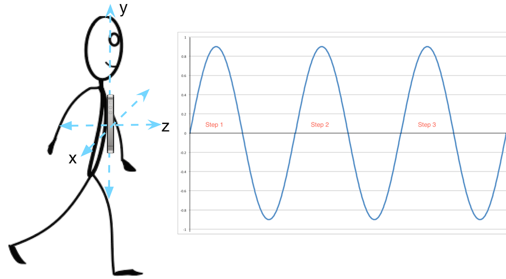
For the sake of simplicity, we’ll assume that the person:- is walking in the $z$ direction;
- bounces with each step in the $y$ direction; and
- maintains the phone in the same orientation throughout the entire walk.
In our perfect world, acceleration from step bounces will form a perfect sine wave in the $y$ direction. Each peak in the sine wave is exactly one step. Step counting becomes a matter of counting these perfect peaks.
Ah, the joys of a perfect world, which we only ever experience in texts like this. Don’t fret, things are about to get a little messier, and a lot more exciting. Let’s add a little more reality to our world.
Even Perfect Worlds Have Fundamental Forces of Nature
The force of gravity causes an acceleration in the direction of gravity, which we refer to as gravitational acceleration. This acceleration is unique because it is always present and, for the purposes of this chapter, is constant at 9.8 $m/s^2$.
Suppose a smartphone is lying on a table screen-side up. In this orientation, our coordinate system is such that the negative $z$ direction is the one that gravity is acting on. Gravity will pull our phone in the negative $z$ direction, so our accelerometer, even when perfectly still, will record an acceleration of 9.8 $m/s^2$ in the negative $z$ direction. Accelerometer data from our phone in this orientation is shown in Figure: Example accelerometer data at rest.
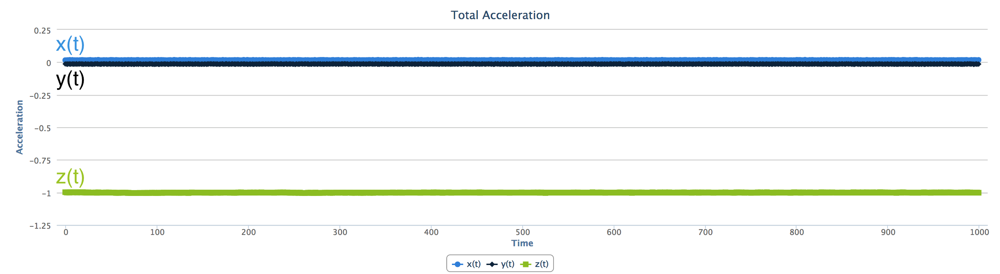
Note that $x(t)$ and $y(t)$ remain constant at 0, while $z(t)$ is constant at -1 g. Our accelerometer records all acceleration, including gravitational acceleration.Each time series measures the total acceleration in that direction. Total acceleration is the sum of user acceleration and gravitational acceleration.
User acceleration is the acceleration of the device due to the movement of the user, and is constant at 0 when the phone is perfectly still. However, when the user is moving with the device, user acceleration is rarely constant, since it’s difficult for a person to move with a constant acceleration.
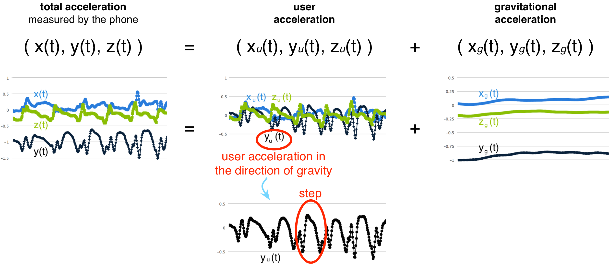
To count steps, we’re interested in the bounces created by the user in the direction of gravity. That means we’re interested in isolating the 1-dimensional time series which describes user acceleration in the direction of gravity from our 3-dimensional acceleration signal (Figure: Component signals).In our simple example, gravitational acceleration is 0 in $x(t)$ and $z(t)$ and constant at 9.8 $m/s^2$ in $y(t)$. Therefore, in our total acceleration plot, $x(t)$ and $z(t)$ fluctuate around 0 while $y(t)$ fluctuates around -1 g. In our user acceleration plot, we notice that—because we have removed gravitational acceleration—all three time series fluctuate around 0. Note the obvious peaks in $y_{u}(t)$. Those are due to step bounces! In our last plot, gravitational acceleration, $y_{g}(t)$ is constant at -1 g, and $x_{g}(t)$ and $z_{g}(t)$ are constant at 0.
So, in our example, the 1-dimensional user acceleration in the direction of gravity time series we’re interested in is $y_{u}(t)$. Although $y_{u}(t)$ isn’t as smooth as our perfect sine wave, we can identify the peaks, and use those peaks to count steps. So far, so good. Now, let’s add even more reality to our world.
People Are Complicated Creatures
What if a person carries the phone in a bag on their shoulder, with the phone in a more wonky position? To make matters worse, what if the phone rotates in the bag part way through the walk, as in Figure: A more complicated walk?
Yikes. Now all three of our components have a non-zero gravitational acceleration, so the user acceleration in the direction of gravity is now split amongst all three time series. To determine user acceleration in the direction of gravity, we first have to determine which direction gravity is acting in. To do this, we have to split total acceleration in each of the three time series into a user acceleration time series and a gravitational acceleration time series (Figure: More complicated component signals).
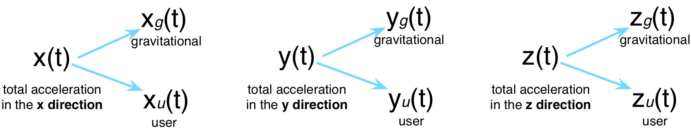
Then we can isolate the portion of user acceleration in each component that is in the direction of gravity, resulting in just the user acceleration in the direction of gravity time series.Let’s define this as two steps below:
- Splitting total acceleration into user acceleration and gravitational acceleration.
- Isolating user acceleration in the direction of gravity.
We’ll look at each step separately, and put on our mathematician hats.
1. Splitting Total Acceleration Into User Acceleration and Gravitational Acceleration
We can use a tool called a filter to split a total acceleration time series into a user acceleration time series and a gravitational acceleration time series.
Low-Pass and High-Pass Filters
A filter is a tool used in signal processing to remove an unwanted component from a signal.
A low-pass filter allows low-frequency signals through, while attenuating signals higher than a set threshold. Conversely, a high-pass filter allows high-frequency signals through, while attenuating signals below a set threshold. Using music as an analogy, a low-pass filter can eliminate treble, and a high-pass filter can eliminate bass.
In our situation, the frequency, measured in Hz, indicates how quickly the acceleration is changing. A constant acceleration has a frequency of 0 Hz, while a non-constant acceleration has a non-zero frequency. This means that our constant gravitational acceleration is a 0 Hz signal, while user acceleration is not.
For each component, we can pass total acceleration through a low-pass filter, and we’ll be left with just the gravitational acceleration time series. Then we can subtract gravitational acceleration from total acceleration, and we’ll have the user acceleration time series (Figure: A low-pass filter).
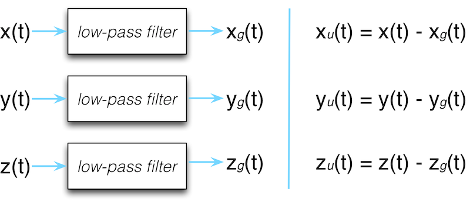
There are numerous varieties of filters. The one we’ll use is called an infinite impulse response (IIR) filter. We’ve chosen an IIR filter because of its low overhead and ease of implementation. The IIR filter we’ve chosen is implemented using the formula:$$ output_{i} = \alpha_{0}(input_{i}\beta_{0} + input_{i-1}\beta_{1} + input_{i-2}\beta_{2} - output_{i-1}\alpha_{1} - output_{i-2}\alpha_{2}) $$
The design of digital filters is outside of the scope of this chapter, but a very short teaser discussion is warranted. It’s a well-studied, fascinating topic, with numerous practical applications. A digital filter can be designed to cancel any frequency or range of frequencies desired. The $\alpha$ and $\beta$ values in the formula are coefficients, set based on the cutoff frequency, and the range of frequencies we want to preserve.
We want to cancel all frequencies except for our constant gravitational acceleration, so we’ve chosen coefficients that attenuate frequencies higher than 0.2 Hz. Notice that we’ve set our threshold slightly higher than 0 Hz. While gravity does create a true 0 Hz acceleration, our real, imperfect world has real, imperfect accelerometers, so we’re allowing for a slight margin of error in measurement.
Implementing a Low-Pass Filter
Let’s work through a low-pass filter implementation using our earlier example. We’ll split:
- $x(t)$ into $x_{g}(t)$ and $x_{u}(t)$,
- $y(t)$ into $y_{g}(t)$ and $y_{u}(t)$, and
- $z(t)$ into $z_{g}(t)$ and $z_{u}(t)$.
We’ll initialize the first two values of gravitational acceleration to 0, so that the formula has initial values to work with.
$$x_{g}(0) = x_{g}(1) = y_{g}(0) = y_{g}(1) = z_{g}(0) = z_{g}(1) = 0$$
Then we’ll implement the filter formula for each time series.
$$x_{g}(t) = \alpha_{0}(x(t)\beta_{0} + x(t-1)\beta_{1} + x(t-2)\beta_{2} - x_{g}(t-1)\alpha_{1} - x_{g}(t-2)\alpha_{2})$$
$$y_{g}(t) = \alpha_{0}(y(t)\beta_{0} + y(t-1)\beta_{1} + y(t-2)\beta_{2} - y_{g}(t-1)\alpha_{1} - y_{g}(t-2)\alpha_{2})$$
$$z_{g}(t) = \alpha_{0}(z(t)\beta_{0} + z(t-1)\beta_{1} + z(t-2)\beta_{2} - z_{g}(t-1)\alpha_{1} - z_{g}(t-2)\alpha_{2})$$
The resulting time series after low-pass filtering are in Figure: Gravitational acceleration.
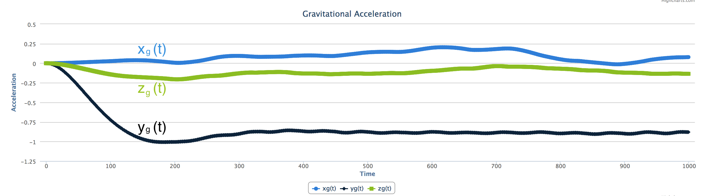
$x_{g}(t)$ and $z_{g}(t)$ hover around 0, and $y_{g}(t)$ very quickly drops to $-1g$. The initial 0 value in $y_{g}(t)$ is from the initialization of the formula.Now, to calculate user acceleration, we can subtract gravitational acceleration from our total acceleration:
$$ x_{u}(t) = x(t) - x_{g}(t) $$ $$ y_{u}(t) = y(t) - y_{g}(t) $$ $$ z_{u}(t) = z(t) - z_{g}(t) $$
The result is the time series seen in Figure: Split acceleration. We’ve successfully split our total acceleration into user acceleration and gravitational acceleration!
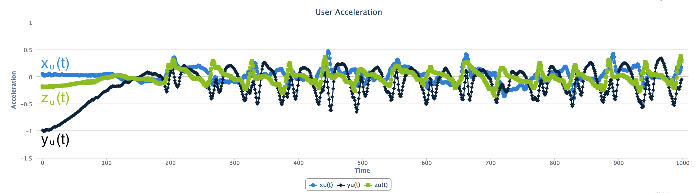
### 2. Isolating User Acceleration in the Direction of Gravity$x_{u}(t)$, $y_{u}(t)$, and $z_{u}(t)$ include all movements of the user, not just movements in the direction of gravity. Our goal here is to end up with a 1-dimensional time series representing user acceleration in the direction of gravity. This will include portions of user acceleration in each of the directions.
Let’s get to it. First, some linear algebra 101. Don’t take that mathematician hat off just yet!
The Dot Product
When working with coordinates, you won’t get very far before being introduced to the dot product, one of the fundamental tools used in comparing the magnitude and direction of $x$, $y$, and $z$ coordinates.
The dot product takes us from 3-dimensional space to 1-dimensional space (Figure: The dot product). When we take the dot product of the two time series, user acceleration and gravitational acceleration, both of which are in 3-dimensional space, we’ll be left with a single time series in 1-dimensional space representing the portion of user acceleration in the direction of gravity. We’ll arbitrarily call this new time series $a(t)$, because, well, every important time series deserves a name.
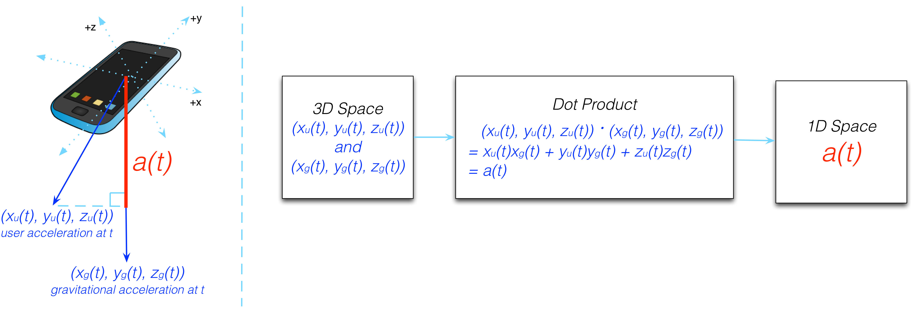
#### Implementing the Dot ProductWe can implement the dot product for our earlier example using the formula $a(t) = x_{u}(t)x_{g}(t) + y_{u}(t)y_{g}(t) + z_{u}(t)z_{g}(t)$, leaving us with $a(t)$ in 1-dimensional space (Figure: Implementing the dot product).
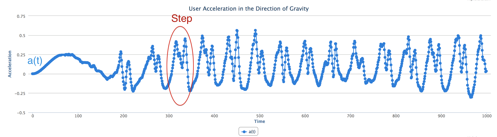
We can now visually pick out where the steps are in $a(t)$. The dot product is very powerful, yet beautifully simple.Solutions in the Real World
We saw how quickly our seemingly simple problem became more complex when we threw in the challenges of the real world and real people. However, we’re getting a lot closer to counting steps, and we can see how $a(t)$ is starting to resemble our ideal sine wave. But, only “kinda, sorta” starting to. We still need to make our messy $a(t)$ time series smoother. There are four main issues (Figure: Jumpy, slow, short, bumpy) with $a(t)$ in its current state. Let’s examine each one.
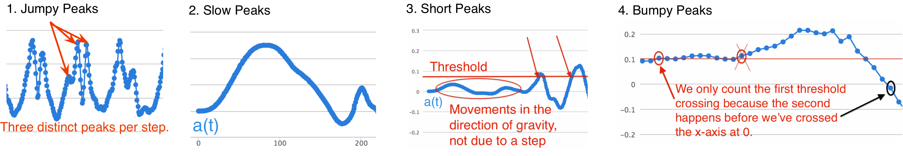
#### 1. Jumpy Peaks$a(t)$ is very “jumpy”, because a phone can jiggle with each step, adding a high-frequency component to our time series. This jumpiness is called noise. By studying numerous data sets, we’ve determined that a step acceleration is at maximum 5 Hz. We can use a low-pass IIR filter to remove the noise, picking $\alpha$ and $\beta$ to attenuate all signals above 5 Hz.
2. Slow Peaks
With a sampling rate of 100, the slow peak displayed in $a(t)$ spans 1.5 seconds, which is too slow to be a step. In studying enough samples of data, we’ve determined that the slowest step we can take is at a 1 Hz frequency. Slower accelerations are due to a low-frequency component, that we can again remove using a high-pass IIR filter, setting $\alpha$ and $\beta$ to cancel all signals below 1 Hz.
3. Short Peaks
As a person is using an app or making a call, the accelerometer registers small movements in the direction of gravity, presenting themselves as short peaks in our time series. We can eliminate these short peaks by setting a minimum threshold, and counting a step every time $a(t)$ crosses that threshold in the positive direction.
4. Bumpy Peaks
Our pedometer should accommodate many people with different walks, so we’ve set minimum and maximum step frequencies based on a large sample size of people and walks. This means that we may sometimes filter slightly too much or too little. While we’ll often have fairly smooth peaks, we can, once in a while, get a “bumpier” peak. Figure: Jumpy, slow, short, bumpy zooms in on one such peak.
When bumpiness occurs at our threshold, we can mistakenly count too many steps for one peak. We’ll use a method called hysteresis to address this. Hysteresis refers to the dependence of an output on past inputs. We can count threshold crossings in the positive direction, as well as 0 crossings in the negative direction. Then, we only count steps where a threshold crossing occurs after a 0 crossing, ensuring we count each step only once.
Peaks That Are Juuuust Right
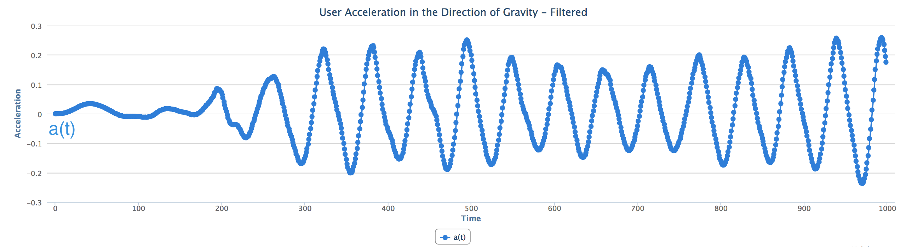
In accounting for these four scenarios, we’ve managed to bring our messy $a(t)$ fairly close to our ideal sine wave (Figure: Tweaked peaks), allowing us to count steps.Recap
The problem, at first glance, looked straightforward. However, the real world and real people threw a few curve balls our way. Let’s recap how we solved the problem:
- We started with total acceleration, $(x(t), y(t), z(t))$.
- We used a low-pass filter to split total acceleration into user acceleration and gravitational acceleration, $(x_{u}(t), y_{u}(t), z_{u}(t))$ and $(x_{g}(t), y_{g}(t), z_{g}(t))$, respectively.
- We took the dot product of $(x_{u}(t), y_{u}(t), z_{u}(t))$ and $(x_{g}(t), y_{g}(t), z_{g}(t))$ to obtain the user acceleration in the direction of gravity, $a(t)$.
- We used a low-pass filter again to remove the high-frequency component of $a(t)$, removing noise.
- We used a high-pass filter to cancel the low-frequency component of $a(t)$, removing slow peaks.
- We set a threshold to ignore short peaks.
- We used hysteresis to avoid double-counting steps with bumpy peaks.
As software developers in a training or academic setting, we may have been presented with a perfect signal and asked to write code to count the steps in that signal. While that may have been an interesting coding challenge, it wouldn’t have been something we could apply in a live situation. We saw that in reality, with gravity and people thrown into the mix, the problem was a little more complex. We used mathematical tools to address the complexities, and were able to solve a real-world problem. It’s time to translate our solution into code.
Diving Into Code
Our goal for this chapter is to create a web application in Ruby that accepts accelerometer data, parses, processes, and analyzes the data, and returns the number of steps taken, the distance travelled, and the elapsed time.
Preliminary Work
Our solution requires us to filter our time series several times. Rather than peppering filtering code throughout our program, it makes sense to create a class that takes care of the filtering, and if we ever need to enhance or modify it, we’ll only ever need to change that one class. This strategy is called separation of concerns, a commonly used design principle which promotes splitting a program into distinct pieces, where every piece has one primary concern. It’s a beautiful way to write clean, maintainable code that’s easily extensible. We’ll revisit this idea several times throughout the chapter.
Let’s dive into the filtering code, contained in, logically, a Filter class.
class Filter
COEFFICIENTS_LOW_0_HZ = {
alpha: [1, -1.979133761292768, 0.979521463540373],
beta: [0.000086384997973502, 0.000172769995947004, 0.000086384997973502]
}
COEFFICIENTS_LOW_5_HZ = {
alpha: [1, -1.80898117793047, 0.827224480562408],
beta: [0.095465967120306, -0.172688631608676, 0.095465967120306]
}
COEFFICIENTS_HIGH_1_HZ = {
alpha: [1, -1.905384612118461, 0.910092542787947],
beta: [0.953986986993339, -1.907503180919730, 0.953986986993339]
}
def self.low_0_hz(data)
filter(data, COEFFICIENTS_LOW_0_HZ)
end
def self.low_5_hz(data)
filter(data, COEFFICIENTS_LOW_5_HZ)
end
def self.high_1_hz(data)
filter(data, COEFFICIENTS_HIGH_1_HZ)
end
private
def self.filter(data, coefficients)
filtered_data = [0,0]
(2..data.length-1).each do |i|
filtered_data << coefficients[:alpha][0] *
(data[i] * coefficients[:beta][0] +
data[i-1] * coefficients[:beta][1] +
data[i-2] * coefficients[:beta][2] -
filtered_data[i-1] * coefficients[:alpha][1] -
filtered_data[i-2] * coefficients[:alpha][2])
end
filtered_data
end
end
Anytime our program needs to filter a time series, we can call one of the class methods in Filter with the data we need filtered:
low_0_hzis used to low-pass filter signals near 0 Hzlow_5_hzis used to low-pass filter signals at or below 5 Hzhigh_1_hzis used to high-pass filter signals above 1 Hz
Each class method calls filter, which implements the IIR filter and returns the result. If we wish to add more filters in the future, we only need to change this one class. Note is that all magic numbers are defined at the top. This makes our class easier to read and understand.
Input Formats
Our input data is coming from mobile devices such as Android phones and iPhones. Most mobile phones on the market today have accelerometers built in, that are able to record total acceleration. Let’s call the input data format that records total acceleration the combined format. Many, but not all, devices can also record user acceleration and gravitational acceleration separately. Let’s call this format the separated format. A device that has the ability to return data in the separated format necessarily has the ability to return data in the combined format. However, the inverse is not always true. Some devices can only record data in the combined format. Input data in the combined format will need to be passed through a low-pass filter to turn it into the separated format.
We want our program to handle all mobile devices on the market with accelerometers, so we’ll need to accept data in both formats. Let’s look at the two formats we’ll be accepting individually.
Combined Format
Data in the combined format is total acceleration in the $x$, $y$, and $z$ directions, over time. $x$, $y$, and $z$ values will be separated by a comma, and samples per unit time will be separated by a semi-colon.
$$ x_1,y_1,z_1; … x_n,y_n,z_n; $$
Separated Format
The separated format returns user acceleration and gravitational acceleration in the $x$, $y$, and $z$ directions, over time. User acceleration values will be separated from gravitational acceleration values by a pipe.
$$ x^{u}_1,y^{u}_1,z^{u}_1 \vert x^{g}_1,y^{g}_1,z^{g}_1; … x^{u}_n,y^{u}_n,z^{u}_n \vert x^{g}_n,y^{g}_n,z^{g}_n; $$
I Got Multiple Input Formats But a Standard Ain’t One
Dealing with multiple input formats is a common programming problem. If we want our entire program to work with both formats, every single piece of code dealing with the data would need to know how to handle both formats. This can become very messy, very quickly, especially if a third (or a fourth, or a fifth, or a hundredth) input format is added.
Standard Format
The cleanest way for us to deal with this is to take our two input formats and fit them into a standard format as soon as possible, allowing the rest of the program to work with this new standard format. Our solution requires that we work with user acceleration and gravitational acceleration separately, so our standard format will need to be split into the two accelerations (Figure: Standard format).
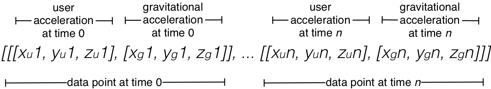
Our standard format allows us to store a time series, as each element represents acceleration at a point in time. We’ve defined it as an array of arrays of arrays. Let’s peel that onion.- The first array is just a wrapper to hold the all of the data.
- The second set of arrays contains one array per data sample taken. If our sampling rate is 100 and we sample data for 10 seconds, we’ll have $100 * 10$, or 1000, arrays in this second set.
- The third set of arrays is the pair of arrays enclosed within the second set. They both contain acceleration data in the $x$, $y$, and $z$ directions; the first representing user acceleration and the second, gravitational acceleration.
The Pipeline
The input into our system will be data from an accelerometer, information on the user taking the walk (gender, stride, etc.), and information on the trial walk itself (sampling rate, actual steps taken, etc.). Our system will apply the signal processing solution, and output the number of steps calculated, the delta between the actual steps and calculated steps, the distance travelled, and the elapsed time. The entire process from input to output can be viewed as a pipeline (Figure: The pipeline).
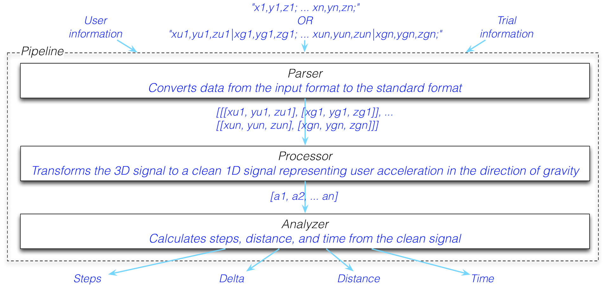
In the spirit of separation of concerns, we’ll write the code for each distinct component of the pipeline—parsing, processing, and analyzing—individually.Parsing
Given that we want our data in the standard format as early as possible, it makes sense to write a parser that allows us to take our two known input formats and convert them to a standard output format as the first component of our pipeline. Our standard format splits out user acceleration and gravitational acceleration, which means that if our data is in the combined format, our parser will need to first pass it through a low-pass filter to convert it to the standard format.
In the future, if we ever have to add another input format, the only code we’ll have to touch is this parser. Let’s separate concerns once more, and create a Parser class to handle the parsing.
class Parser
attr_reader :parsed_data
def self.run(data)
parser = Parser.new(data)
parser.parse
parser
end
def initialize(data)
@data = data
end
def parse
@parsed_data = @data.to_s.split(';').map { |x| x.split('|') }
.map { |x| x.map { |x| x.split(',').map(&:to_f) } }
unless @parsed_data.map { |x| x.map(&:length).uniq }.uniq == [[3]]
raise 'Bad Input. Ensure data is properly formatted.'
end
if @parsed_data.first.count == 1
filtered_accl = @parsed_data.map(&:flatten).transpose.map do |total_accl|
grav = Filter.low_0_hz(total_accl)
user = total_accl.zip(grav).map { |a, b| a - b }
[user, grav]
end
@parsed_data = @parsed_data.length.times.map do |i|
user = filtered_accl.map(&:first).map { |elem| elem[i] }
grav = filtered_accl.map(&:last).map { |elem| elem[i] }
[user, grav]
end
end
end
end
Parser has a class-level run method as well as an initializer. This is a pattern we’ll use several times, so it’s worth a discussion. Initializers should generally be used for setting up an object, and shouldn’t do a lot of work. Parser’s initializer simply takes data in the combined or separated format and stores it in the instance variable @data. The parse instance method uses @data internally, and does the heavy lifting of parsing and setting the result in the standard format to @parsed_data. In our case, we’ll never need to instantiate a Parser instance without having to immediately call parse. Therefore, we add a convenient class-level run method that instantiates an instance of Parser, calls parse on it, and returns the instance of the object. We can now pass our input data to run, knowing we’ll receive an instance of Parser with @parsed_data already set.
Let’s take a look at our hard-working parse method. The first step in the process is to take string data and convert it to numerical data, giving us an array of arrays of arrays. Sound familiar? The next thing we do is ensure that the format is as expected. Unless we have exactly three elements per the innermost arrays, we throw an exception. Otherwise, we continue on.
Note the differences in @parsed_data between the two formats at this stage. In the combined format it contains arrays of exactly one array:
$$ [[[x_1, y_1, z_1]], … [[x_n, y_n, z_n]] $$
In the separated format it contains arrays of exactly two arrays:
$$[[[x_{u}^1,y_{u}^1,z_{u}^1], [x_{g}^1,y_{g}^1,z_{g}^1]], … [[x_{u}^n,y_{u}^n,z_{u}^n], [x_{g}^n,y_{g}^n,z_{g}^n]]]$$
The separated format is already in our desired standard format after this operation. Amazing. However, if the data is combined (or, equivalently, has exactly one array where the separated format would have two), then we proceed with two loops. The first loop splits total acceleration into gravitational and user, using Filter with a :low_0_hz type, and the second loop reorganizes the data into the standard format.
parse leaves us with @parsed_data holding data in the standard format, regardless of whether we started off with combined or separated data. What a relief!
As our program becomes more sophisticated, one area for improvement is to make our users’ lives easier by throwing exceptions with more specific error messages, allowing them to more quickly track down common input formatting problems.
Processing
Based on the solution we defined, we’ll need our code to do a couple of things to our parsed data before we can count steps:
- Isolate movement in the direction of gravity using the dot product.
- Remove jumpy (high-frequency) and slow (low-frequency) peaks with a low-pass filter followed by a high-pass filter.
We’ll handle short and bumpy peaks by avoiding them during step counting.
Now that we have our data in the standard format, we can process it to get in into a state where we can analyze it to count steps (Figure: Processing).
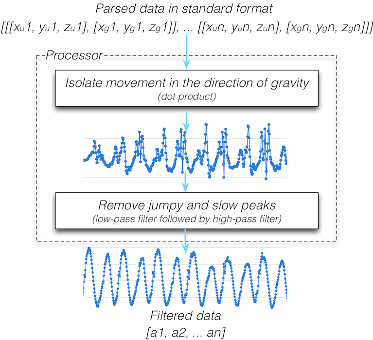
The purpose of processing is to take our data in the standard format and incrementally clean it up to get it to a state as close as possible to our ideal sine wave. Our two processing operations, taking the dot product and filtering, are quite distinct, but both are intended to process our data, so we’ll create one class called aProcessor.
class Processor
attr_reader :dot_product_data, :filtered_data
def self.run(data)
processor = Processor.new(data)
processor.dot_product
processor.filter
processor
end
def initialize(data)
@data = data
end
def dot_product
@dot_product_data = @data.map do |x|
x[0][0] * x[1][0] + x[0][1] * x[1][1] + x[0][2] * x[1][2]
end
end
def filter
@filtered_data = Filter.low_5_hz(@dot_product_data)
@filtered_data = Filter.high_1_hz(@filtered_data)
end
end
Again, we see the run and initialize methods pattern. run calls our two processor methods, dot_product and filter, directly. Each method accomplishes one of our two processing operations. dot_product isolates movement in the direction of gravity, and filter applies the low-pass and high-pass filters in sequence to remove jumpy and slow peaks.
Pedometer Functionality
Provided information about the person using the pedometer is available, we can measure more than just steps. Our pedometer will measure distance travelled and elapsed time, as well as steps taken.
Distance Travelled
A mobile pedometer is generally used by one person. Distance travelled during a walk is calculated by multiplying the steps taken by the person’s stride length. If the stride length is unknown, we can use optional user information like gender and height to approximate it. Let’s create a User class to encapsulate this related information.
class User
GENDER = ['male', 'female']
MULTIPLIERS = {'female' => 0.413, 'male' => 0.415}
AVERAGES = {'female' => 70.0, 'male' => 78.0}
attr_reader :gender, :height, :stride
def initialize(gender = nil, height = nil, stride = nil)
@gender = gender.to_s.downcase unless gender.to_s.empty?
@height = Float(height) unless height.to_s.empty?
@stride = Float(stride) unless stride.to_s.empty?
raise 'Invalid gender' if @gender && !GENDER.include?(@gender)
raise 'Invalid height' if @height && (@height <= 0)
raise 'Invalid stride' if @stride && (@stride <= 0)
@stride ||= calculate_stride
end
private
def calculate_stride
if gender && height
MULTIPLIERS[@gender] * height
elsif height
height * (MULTIPLIERS.values.reduce(:+) / MULTIPLIERS.size)
elsif gender
AVERAGES[gender]
else
AVERAGES.values.reduce(:+) / AVERAGES.size
end
end
end
At the top of our class, we define constants to avoid hardcoding magic numbers and strings throughout. For the purposes of this discussion, let’s assume that the values in MULTIPLIERS and AVERAGES have been determined from a large sample size of diverse people.
Our initializer accepts gender, height, and stride as optional arguments. If the optional parameters are passed in, our initializer sets instance variables of the same names, after some data formatting. We raise an exception for invalid values.
Even when all optional parameters are provided, the input stride takes precedence. If it’s not provided, the calculate_stride method determines the most accurate stride length possible for the user. This is done with an if statement:
- The most accurate way to calculate stride length is to use a person’s height and a multiplier based on gender, provided we have a valid gender and height.
- A person’s height is a better predictor of stride than their gender is. If we have height but not gender, we can multiply the height by the average of the two values in
MULTIPLIERS. - If all we have is a gender, we can use the average stride length from
AVERAGES. - Finally, if we don’t have anything, we can take the average of the two values in
AVERAGESand use that as our stride.
Note that the further down the if statement we get, the less accurate our stride length becomes. In any case, our User class determines the stride length as best it can.
Elapsed Time
The time spent travelling is measured by dividing the number of data samples in our Processor’s @parsed_data by the sampling rate of the device, if we have it. Since the rate has more to do with the trial walk itself than the user, and the User class in fact does not have to be aware of the sampling rate, this is a good time to create a very small Trial class.
class Trial
attr_reader :name, :rate, :steps
def initialize(name, rate = nil, steps = nil)
@name = name.to_s.delete(' ')
@rate = Integer(rate.to_s) unless rate.to_s.empty?
@steps = Integer(steps.to_s) unless steps.to_s.empty?
raise 'Invalid name' if @name.empty?
raise 'Invalid rate' if @rate && (@rate <= 0)
raise 'Invalid steps' if @steps && (@steps < 0)
end
end
All of the attribute readers in Trial are set in the initializer based on parameters passed in:
nameis a name for the specific trial, to help differentiate between the different trials.rateis the sampling rate of the accelerometer during the trial.stepsis used to set the actual steps taken, so that we can record the difference between the actual steps the user took and the ones our program counted.
Much like our User class, some information is optional. We’re given the opportunity to input details of the trial, if we have it. If we don’t have those details, our program bypasses calculating the additional results, such as time spent travelling. Another similarity to our User class is the prevention of invalid values.
Steps Taken
It’s time to implement our step counting strategy in code. So far, we have a Processor class that contains @filtered_data, which is our clean time series representing user acceleration in the direction of gravity. We also have classes that give us the necessary information about the user and the trial. What we’re missing is a way to analyze @filtered_data with the information from User and Trial, and count steps, measure distance, and measure time.
The analysis portion of our program is different from the data manipulation of the Processor, and different from the information collection and aggregation of the User and Trial classes. Let’s create a new class called Analyzer to perform this data analysis.
class Analyzer
THRESHOLD = 0.09
attr_reader :steps, :delta, :distance, :time
def self.run(data, user, trial)
analyzer = Analyzer.new(data, user, trial)
analyzer.measure_steps
analyzer.measure_delta
analyzer.measure_distance
analyzer.measure_time
analyzer
end
def initialize(data, user, trial)
@data = data
@user = user
@trial = trial
end
def measure_steps
@steps = 0
count_steps = true
@data.each_with_index do |data, i|
if (data >= THRESHOLD) && (@data[i-1] < THRESHOLD)
next unless count_steps
@steps += 1
count_steps = false
end
count_steps = true if (data < 0) && (@data[i-1] >= 0)
end
end
def measure_delta
@delta = @steps - @trial.steps if @trial.steps
end
def measure_distance
@distance = @user.stride * @steps
end
def measure_time
@time = @data.count/@trial.rate if @trial.rate
end
end
The first thing we do in Analyzer is define a THRESHOLD constant, which we’ll use to avoid counting short peaks as steps. For the purposes of this discussion, let’s assume we’ve analyzed numerous diverse data sets and determined a threshold value that accommodated the largest number of those data sets. The threshold can eventually become dynamic and vary with different users, based on the calculated versus actual steps they’ve taken; a learning algorithm, if you will.
Our Analyzer’s initializer takes a data parameter and instances of User and Trial, and sets the instance variables @data, @user, and @trial to the passed-in parameters. The run method calls measure_steps, measure_delta, measure_distance, and measure_time. Let’s take a look at each method.
measure_steps
Finally! The step counting portion of our step counting app. The first thing we do in measure_steps is initialize two variables:
@stepsis used to count the number of steps.count_stepsis used for hysteresis to determine if we’re allowed to count steps at a point in time.
We then iterate through @processor.filtered_data. If the current value is greater than or equal to THRESHOLD, and the previous value was less than THRESHOLD, then we’ve crossed the threshold in the positive direction, which could indicate a step. The unless statement skips ahead to the next data point if count_steps is false, indicating that we’ve already counted a step for that peak. If we haven’t, we increment @steps by 1, and set count_steps to false to prevent any more steps from being counted for that peak. The next if statement sets count_steps to true once our time series has crossed the $x$-axis in the negative direction, and we’re on to the next peak.
There we have it, the step counting portion of our program! Our Processor class did a lot of work to clean up the time series and remove frequencies that would result in counting false steps, so our actual step counting implementation is not complex.
It’s worth noting that we store the entire time series for the walk in memory. Our trials are all short walks, so that’s not currently a problem, but eventually we’d like to analyze long walks with large amounts of data. Ideally, we’d want to stream data in, only storing very small portions of the time series in memory. Keeping this in mind, we’ve put in the work to ensure that we only need the current data point and the data point before it. Additionally, we’ve implemented hysteresis using a Boolean value, so we don’t need to look backward in the time series to ensure we’ve crossed the $x$-axis at 0.
There’s a fine balance between accounting for likely future iterations of the product, and over-engineering a solution for every conceivable product direction under the sun. In this case, it’s reasonable to assume that we’ll have to handle longer walks in the near future, and the costs of accounting for that in step counting are fairly low.
measure_delta
If the trial provides actual steps taken during the walk, measure_delta will return the difference between the calculated and actual steps.
measure_distance
The distance is measured by multiplying our user’s stride by the number of steps. Since the distance depends on the step count, measure_steps must be called before measure_distance.
measure_time
As long as we have a sampling rate, time is calculated by dividing the total number of samples in filtered_data by the sampling rate. It follows, then, that time is calculated in seconds.
Tying It All Together With the Pipeline
Our Parser, Processor, and Analyzer classes, while useful individually, are definitely better together. Our program will often use them to run through the pipeline we introduced earlier. Since the pipeline will need to be run frequently, we’ll create a Pipeline class to run it for us.
class Pipeline
attr_reader :data, :user, :trial, :parser, :processor, :analyzer
def self.run(data, user, trial)
pipeline = Pipeline.new(data, user, trial)
pipeline.feed
pipeline
end
def initialize(data, user, trial)
@data = data
@user = user
@trial = trial
end
def feed
@parser = Parser.run(@data)
@processor = Processor.run(@parser.parsed_data)
@analyzer = Analyzer.run(@processor.filtered_data, @user, @trial)
end
end
We use our now-familiar run pattern and supply Pipeline with accelerometer data, and instances of User and Trial. The feed method implements the pipeline, which entails running Parser with the accelerometer data, then using the parser’s parsed data to run Processor, and finally using the processor’s filtered data to run Analyzer. The Pipeline keeps @parser, @processor, and @analyzer instance variables, so that the program has access to information from those objects for display purposes through the app.
Adding A Friendly Interface
We’re through the most labour intensive part of our program. Next, we’ll build a web app to present the data in a format that is pleasing to a user. A web app naturally separates the data processing from the presentation of the data. Let’s look at our app from a user’s perspective before the code.
A User Scenario
When a user first enters the app by navigating to /uploads, they see a table of existing data and a form to submit new data by uploading an accelerometer output file and trial and user information (Figure: Upload view).
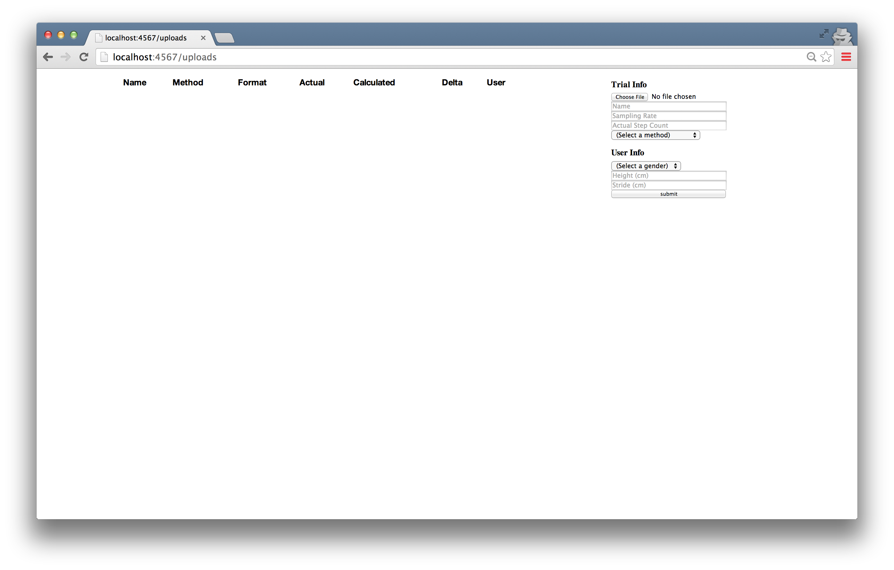
Submitting the form stores the data to the file system, parses, processes, and analyzes it, and redirects back to/uploads with the new entry in the table.
Clicking the Detail link for an entry presents the user with the following view in Figure: Detail view.
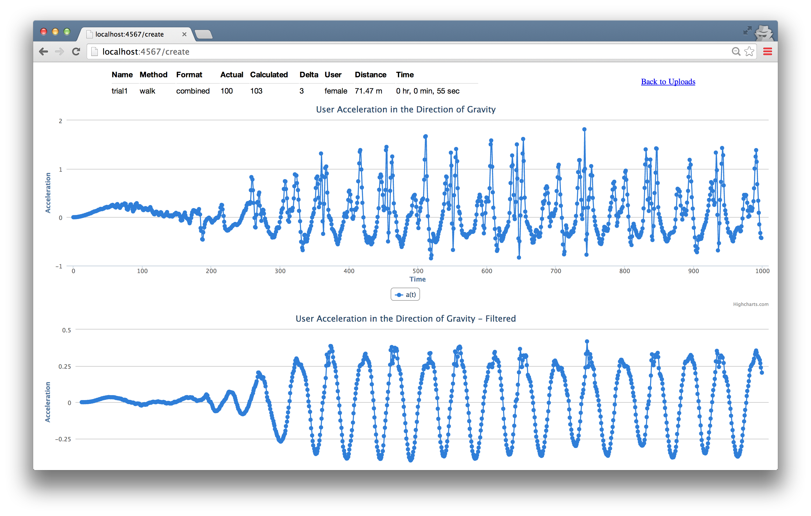
The information presented includes values input by the user through the upload form, values calculated by our program, and graphs of the time series following the dot product operation, and again following filtering. The user can navigate back to/uploads using the Back to Uploads link.
Let’s look at what the outlined functionality above implies for us, technically. We’ll need two major components that we don’t yet have:
- A way to store and retrieve user input data.
- A web application with a basic interface.
Let’s examine each of these two requirements.
1. Storing and Retrieving Data
Our app needs to store input data to, and retrieve data from, the file system. We’ll create an Upload class to do this. Since the class deals only with the file system and doesn’t relate directly to the implementation of the pedometer, we’ve left it out for brevity, but it’s worth discussing its basic functionality. Our Upload class has three class-level methods for file system access and retrieval, all of which return one or more instances of Upload:
createtakes a file along with user and trial information. It stores the file to the file system, under a filename it generates to contain the user and trial information. The@file_path,@user, and@trialinstance variables allow access to the file path, user object, and trial object, respectively.findtakes a file path and returns an instance ofUpload.allreturns an array ofUploadinstances, one for each accelerometer data file in the file system.
Separation of Concerns in Upload
Once again, we’ve been wise to separate concerns in our program. All code related to storage and retrieval is contained in the Upload class. As our application grows, we’ll likely want to use a database rather than saving everything to the file system. When the time comes for that, all we have to do it change the Upload class. This makes our refactoring simple and clean.
In the future, we can save User and Trial objects to the database. The create, find, and all methods in Upload will then be relevant to User and Trial as well. That means we’d likely refactor those out into their own class to deal with data storage and retrieval in general, and each of our User, Trial, and Upload classes would inherit from that class. We might eventually add helper query methods to that class, and continue building it up from there.
2. Building a Web Application
Web apps have been built many times over, so we’ll leverage the important work of the open source community and use an existing framework to do the boring plumbing work for us. The Sinatra framework does just that. In the tool’s own words, Sinatra is “a DSL for quickly creating web applications in Ruby”. Perfect.
Our web app will need to respond to HTTP requests, so we’ll need a file that defines a route and associated code block for each combination of HTTP method and URL. Let’s call it pedometer.rb.
get '/uploads' do
@error = "A #{params[:error]} error has occurred." if params[:error]
@pipelines = Upload.all.inject([]) do |a, upload|
a << Pipeline.run(File.read(upload.file_path), upload.user, upload.trial)
a
end
erb :uploads
end
get '/upload/*' do |file_path|
upload = Upload.find(file_path)
@pipeline = Pipeline.run(File.read(file_path), upload.user, upload.trial)
erb :upload
end
post '/create' do
begin
Upload.create(params[:data][:tempfile], params[:user], params[:trial])
redirect '/uploads'
rescue Exception => e
redirect '/uploads?error=creation'
end
end
pedometer.rb allows our app to respond to HTTP requests for each of our routes. Each route’s code block either retrieves data from, or stores data to, the file system through Upload, and then renders a view or redirects. The instance variables instantiated will be used directly in our views. The views simply display the data and aren’t the focus of our app, so we we’ll leave the code for them out of this chapter.
Let’s look at each of the routes in pedometer.rb individually.
GET /uploads
Navigating to http://localhost:4567/uploads sends an HTTP GET request to our app, triggering our get '/uploads' code. The code runs the pipeline for all of the uploads in the file system and renders the uploads view, which displays a list of the uploads, and a form to submit new uploads. If an error parameter is included, an error string is created, and the uploads view will display the error.
GET /upload/*
Clicking the Detail link for each upload sends an HTTP GET to /upload with the file path for that upload. The pipeline runs, and the upload view is rendered. The view displays the details of the upload, including the charts, which are created using a JavaScript library called HighCharts.
POST /create
Our final route, an HTTP POST to create, is called when a user submits the form in the uploads view. The code block creates a new Upload, using the params hash to grab the values input by the user through the form, and redirects back to /uploads. If an error occurs in the creation process, the redirect to /uploads includes an error parameter to let the user know that something went wrong.
A Fully Functional App
Voilà! We’ve built a fully functional app, with true applicability.
The real world presents us with intricate, complex challenges. Software is uniquely capable of addressing these challenges at scale with minimal resources. As software engineers, we have the power to create positive change in our homes, our communities, and our world. Our training, academic or otherwise, likely equipped us with the problem-solving skills to write code that solves isolated, well-defined problems. As we grow and hone our craft, it’s up to us to extend that training to address practical problems, tangled up with all of the messy realities of our world. I hope that this chapter gave you a taste of breaking down a real problem into small, addressable parts, and writing beautiful, clean, extensible code to build a solution.
Here’s to solving interesting problems in an endlessly exciting world.